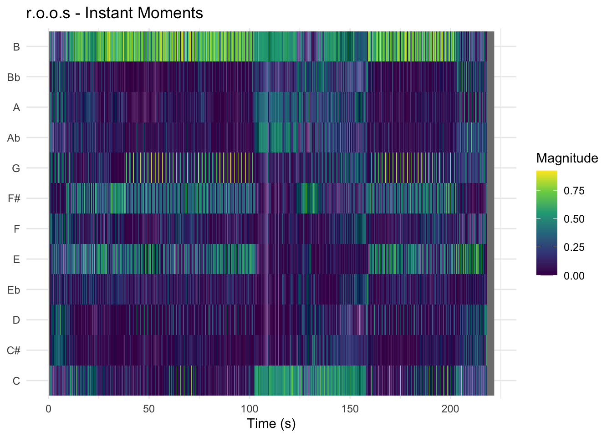

Loading required package: plotly
Attaching package: 'plotly'
The following object is masked from 'package:ggplot2':
last_plot
The following object is masked from 'package:stats':
filter
The following object is masked from 'package:graphics':
layout
Loading required package: viridis
Loading required package: viridisLite
Attaching package: 'viridis'
The following object is masked from 'package:scales':
viridis_pal
======================
Welcome to heatmaply version 1.6.0
Type citation('heatmaply') for how to cite the package.
Type ?heatmaply for the main documentation.
The github page is: https://github.com/talgalili/heatmaply/
Please submit your suggestions and bug-reports at: https://github.com/talgalili/heatmaply/issues
You may ask questions at stackoverflow, use the r and heatmaply tags:
https://stackoverflow.com/questions/tagged/heatmaply
======================
Rows: 62 Columns: 24
── Column specification ────────────────────────────────────────────────────────
Delimiter: ","
chr (7): Track URI, Track Name, Album Name, Artist Name(s), Added By, Genr...
dbl (14): Duration (ms), Popularity, Danceability, Energy, Key, Loudness, M...
lgl (1): Explicit
dttm (1): Added At
date (1): Release Date
ℹ Use `spec()` to retrieve the full column specification for this data.
ℹ Specify the column types or set `show_col_types = FALSE` to quiet this message.
#seperate old trance and new tranceTrance_Corpus <- Final_Corpus %>%mutate(`Release Date`=as.numeric(substr(`Release Date`, 1, 4))) %>%mutate(Category =ifelse(`Release Date`<2015, "Old Trance", "New Trance"))#seperate my own tracks from the old and new trance categoriesTrance_Corpus <- Trance_Corpus %>%mutate(Category =ifelse(`Artist Name(s)`=="Bekí", "Bekí", Category))remotes::install_github('jaburgoyne/compmus')
Using GitHub PAT from the git credential store.
Skipping install of 'compmus' from a github remote, the SHA1 (11f4fe28) has not changed since last install.
Use `force = TRUE` to force installation
Rows: 4773 Columns: 13
── Column specification ────────────────────────────────────────────────────────
Delimiter: ","
dbl (13): TIME, A, Bb, B, C, C#, D, Eb, E, F, F#, G, Ab
ℹ Use `spec()` to retrieve the full column specification for this data.
ℹ Specify the column types or set `show_col_types = FALSE` to quiet this message.
IMROOS |>compmus_wrangle_chroma() |>mutate(pitches =map(pitches, compmus_normalise, "euclidean")) |>compmus_gather_chroma() |>ggplot(aes(x = start + duration /2,width = duration,y = pitch_class,fill = value ) ) +geom_tile() +labs(x ="Time (s)", y =NULL, title ="r.o.o.s - Instant Moments", fill ="Magnitude") +theme_minimal() +scale_fill_viridis_c()

IMDIVASI <-read_csv("Divasi annotation.csv")
Rows: 5675 Columns: 13
── Column specification ────────────────────────────────────────────────────────
Delimiter: ","
dbl (13): TIME, A, Bb, B, C, C#, D, Eb, E, F, F#, G, Ab
ℹ Use `spec()` to retrieve the full column specification for this data.
ℹ Specify the column types or set `show_col_types = FALSE` to quiet this message.
IMDIVASI |>compmus_wrangle_chroma() |>mutate(pitches =map(pitches, compmus_normalise, "euclidean")) |>compmus_gather_chroma() |>ggplot(aes(x = start + duration /2,width = duration,y = pitch_class,fill = value ) ) +geom_tile() +labs(x ="Time (s)", y =NULL, title ="Divasi - Instant Moments", fill ="Magnitude") +theme_minimal() +scale_fill_viridis_c()
To analyse the differences between classic and modern trance, I created chromagrams for two versions of the same track: “Instant Moments”. The original version by R.O.O.S and a modern remake by Divasi. Because both tracks are based on the same musical idea, this makes it easier to clearly see how the genre has changed over time.
In the chromagram of the original R.O.O.S track, there are clear horizontal bands across several pitch classes. This means that certain notes stay active for longer periods of time. These sustained patterns are typical for chords, pads, and arpeggios, which are key elements in classic trance. The result is a smooth and continuous harmonic structure, where the music gradually evolves and creates an emotional progression, especially in breakdown sections.
In contrast, the chromagram of the Divasi remake looks much more fragmented. Instead of long horizontal lines, there are many short vertical patterns, which show that the pitch content is changing more quickly. This suggests that the sounds are shorter and more rhythmically driven, like stabs or repeating synth patterns. Rather than focusing on long chord progressions, the modern version uses pitch more as a rhythmic tool that supports the energy of the track.
Another noticeable difference is that the modern chromagram looks more “busy” and less smooth overall. This reflects how modern trance often focuses on maintaining high energy and drive throughout the track, instead of building long emotional transitions like older trance does.
Overall, the comparison shows a clear shift in how pitch is used in trance music. Classic trance focuses more on harmony and melodic development, while modern trance puts more emphasis on rhythm, repetition, and intensity. Even though both tracks share the same core idea, the chromagrams show how differently that idea is expressed depending on the style and era.
SP <-read_csv("Spectral Bells annotation.csv")
Rows: 14718 Columns: 22
── Column specification ────────────────────────────────────────────────────────
Delimiter: ","
dbl (22): TIME, BIN 1, BIN 2, BIN 3, BIN 4, BIN 5, BIN 6, BIN 7, BIN 8, BIN ...
ℹ Use `spec()` to retrieve the full column specification for this data.
ℹ Specify the column types or set `show_col_types = FALSE` to quiet this message.
SP |>compmus_wrangle_timbre() |>mutate(timbre =map(timbre, compmus_normalise, "manhattan")) |>compmus_gather_timbre() |>ggplot(aes(x = start + duration /2,width = duration,y = mfcc, , fill = value ) ) +geom_tile() +labs(x ="Time (s)", y =NULL, title ="Pegassi - Spectral Bells", fill ="Magnitude") +scale_fill_viridis_c() +theme_classic()
Warning: Using `by = character()` to perform a cross join was deprecated in dplyr 1.1.0.
ℹ Please use `cross_join()` instead.
ℹ The deprecated feature was likely used in the compmus package.
Please report the issue to the authors.
To analyse timbre and structure, I created cepstrograms and self-similarity matrices (SSM) for both a modern trance track and a classic trance track. These visualisations show how the sound of a track develops over time and how different sections are related.
Starting with the modern trance track, the cepstrogram (Pegassi – Spectral Bells) shows a fairly consistent pattern, with most of the activity concentrated in the lower MFCC components. These lower components represent the main characteristics of the sound, such as brightness and bass content. The horizontal bands indicate that the overall timbre remains relatively stable throughout the track, meaning that the same types of sounds and synths are used consistently. However, there are also noticeable changes at specific moments in time, which likely correspond to drops, build-ups, and breakdowns. This suggests that changes in timbre happen in clearly defined sections rather than gradually over time.
The self-similarity matrix of the modern trance track (Pegassi – Spectral Bells) supports this. It shows a clear grid-like structure with repeating blocks. These blocks indicate that certain sections of the track are very similar to each other, meaning that musical elements such as rhythms, sounds, or patterns are reused. The strong vertical and horizontal lines suggest a structured arrangement with clearly separated sections, which is typical for modern trance where repetition and energy are important.
ALTF4 <-read_csv("Alt+f4.csv")
Rows: 21805 Columns: 22
── Column specification ────────────────────────────────────────────────────────
Delimiter: ","
dbl (22): TIME, BIN 1, BIN 2, BIN 3, BIN 4, BIN 5, BIN 6, BIN 7, BIN 8, BIN ...
ℹ Use `spec()` to retrieve the full column specification for this data.
ℹ Specify the column types or set `show_col_types = FALSE` to quiet this message.
ALTF4 |>compmus_wrangle_timbre() |>mutate(timbre =map(timbre, compmus_normalise, "manhattan")) |>compmus_gather_timbre() |>ggplot(aes(x = start + duration /2,width = duration,y = mfcc, , fill = value ) ) +geom_tile() +labs(x ="Time (s)", y =NULL, title ="Anjunabeats - Alt+F4", fill ="Magnitude") +scale_fill_viridis_c() +theme_classic()
Looking at the classic trance track (Anjunabeats – Alt+F4), the cepstrogram shows a smoother and more gradual pattern over time. The horizontal bands are still present, but they appear more continuous, with fewer abrupt changes. This indicates that the timbre develops more slowly, with sounds evolving over longer periods instead of switching quickly between different sections. This reflects the use of sustained pads and layered synths, which are common in classic trance and contribute to a more flowing sound.
The self-similarity matrix of the classic trance track (Anjunabeats - Alt+F4) also shows repeating sections, but the structure appears more continuous. Instead of very clear and separate blocks, the patterns seem to blend more into each other, suggesting smoother transitions between different parts of the track. This indicates that the track is built more around gradual development rather than clearly separated sections.
Comparing the two, a clear difference can be seen in both timbre and structure. The modern trance track is more structured and repetitive, with clearly defined sections and consistent sound design. In contrast, the classic trance track develops more gradually, both in terms of timbre and structure, creating a more continuous and evolving listening experience. This shows that modern trance focuses more on maintaining energy through repetition and structure, while classic trance places more emphasis on progression and gradual change.